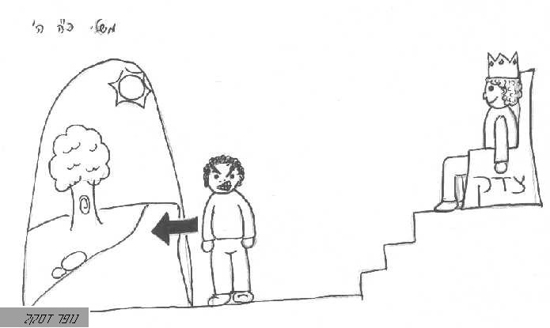

מלכ1
קוד: מלכ1 בתנ"ך
סוג: שזמש
מאת:
אל:
- הגדרה_כללית: = המושל בנתיניו כמו שאדון מושל בעבדיו / אראל
- פועל: המליך (הפעיל)
- פועל: המלך (הפעל)
- תואר: מלֶך (בעל תפקיד)
- פועל: מלַך (פעל)
- מופשט: מלוכה (מופשט)
- תואר: מלכָה (בעל תפקיד)
- מופשט: מלכות (מופשט)
- עצם: מלכת- (עצם בשמים)
= כוכב גדול היו קורין "מלכת-שמיים" לשון מלכה, רש"י. [באה רק בספר ירמיהו]
- מופשט: ממלכה[מ] (מופשט)
- תואר: ממלכה[ע] (שם מתואר)
= מענין "הוריד".
- פועל: נמלך (נפעל)
- צילום:
- צילום:

- ציור: 
- תוכן1: ויימלך ליבי עליי / אראל -> סגלות משלי
- מאמר: כי המלך בוטח בה', ובחסד עליון בל ימוט / יהושע רוזנברג -> קול ישראל (קישור חיצוני)
- ציור: מש ל 22 / רפאל שחורי
- מאמר: נדדה שנת המלך / הרב קורמן -> תכלת אברהם
- מאמר: עיון במגילת אסתר על-פי הידוע לנו על תולדות פרס / יעקב אשכנזי -> בשדה חמד, שנה 40, גליון מס' 1 (קישור חיצוני)
- מאמר: שלטון בספר משלי / -> סגלות משלי
- הגדרה: = יועץ / אביתר כהן
- ביטוי בעל תפקיד: בן המלך
- ביטוי חיה: גזי המלך
- ביטוי קול: דבר המלך
- תוכן1: הביאני המלך חדריו / אראל
- מאמר: המאבק בין אחשורוש לבין ושתי / הלל ויהונתן אורי -> מגילת אסתר - דיוקי ניסוח / כפית ה'תשס"ב ניסן
- מאמר: התנגדות למלוכה
- ביטוי תכשיט: טבעת המלך
- ביטוי גוף: לב מלך
- ביטוי בגד: לבוש מלכות
- ביטוי בעל תפקיד: מלך חכם
- מאמר: מלכות ה' / אראל
- ביטוי כלי: מלכת השמים
- ביטוי מופשט: משפט המלוכה
- ביטוי מופשט: משפט המלך
- ביטוי בעל תפקיד: רואי פני המלך
{kind=link}
{kind=link}
{kind=link}